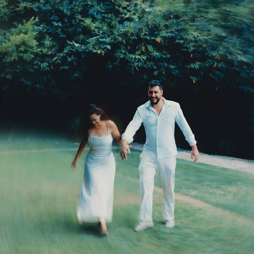

Andressa & Ricardo
A rotina de vocês, sincronizada nos dois celulares.
Abrir o painel- iPhone: no Safari, toque em Compartilhar › Adicionar à Tela de Início.
- Android: no Chrome, menu ⋮ › Adicionar à tela inicial.
- Depois é só abrir pelo ícone com a foto.